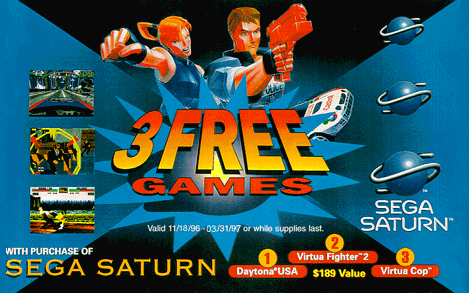
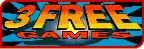
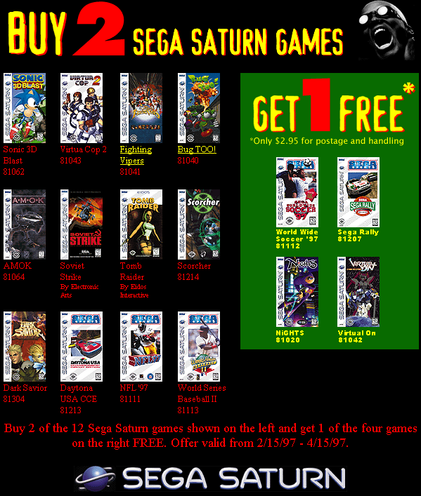

Saturn - Promoção games di gratis!!!
 :::.Por Gigacom
:::.Por Gigacom
Todo mundo sabe da história do Saturn, mas como resumo básico para os ainda não apresentados à gênese desse console, vale recitar a famigerada tragetória desse console:
Foi lançado com um preço absurdo nos EUA em 95, começou a perder mercado logo de cara para o Playstation, abriu uma sangria enorme nos cofres da SEGA, e fez essa empresa ficar louca fazendo tudo quanto é simpatia e reza pra santo para se salvar, mas os santos todos (assim como outras entidades divinas e não tão divinas...) já haviam sido contratados pela Sony, e no fim, a SEGA se ferrou, o Saturn foi pra cova muito mais cedo fazer companhia pras minhocas e quem tinha investido no Saturn se arrependeu profundamente até o fim dos tempo..
Em 1997, uma das tentativas da Sega de levantar as vendas do Saturn nos EUA, foi oferecer logo de cara, nem um, nem dois mas trêêêêêêêêêiiiiiiiisgames juntos com o console. E olha que eram excelentes jogos! Virtua Fighter 2, Virtua Cop e Daytona USA, os três numa unica caixa junto com um Saturn novinho de botões redondos.

O preço até que não era ruim, tudo isso por apenas $189.00 . Que? Achou caro? É que você está acostumado a comprar joguinho de CD por dérreal seu safado
. Que? Achou caro? É que você está acostumado a comprar joguinho de CD por dérreal seu safado !
Nos EUA sempre foi meio complicado descolar games piratas, então
a melhor alternativa por lá é comprar jogos originais
mesmo, o que não é ruim, já que um joguete
original não costuma ser caro (além de possuir qualidade,
manual, garantia, extras...), e nos dias do Saturn, tinha uma penca de
jogo que custavam algo por volta dos $20.00, só
lançamentos ou grandes jogos é que custavam mais, sem
falar nas promoções malucas onde dava pra comprar games
por míseros $5.00 em desovas de grandes lojas do varejo.
!
Nos EUA sempre foi meio complicado descolar games piratas, então
a melhor alternativa por lá é comprar jogos originais
mesmo, o que não é ruim, já que um joguete
original não costuma ser caro (além de possuir qualidade,
manual, garantia, extras...), e nos dias do Saturn, tinha uma penca de
jogo que custavam algo por volta dos $20.00, só
lançamentos ou grandes jogos é que custavam mais, sem
falar nas promoções malucas onde dava pra comprar games
por míseros $5.00 em desovas de grandes lojas do varejo.
A promoção teve efeito, deu pra vender um bocado de Saturn por lá e prolongou o folêgo do console por aquelas bandas até o fim do ano... mas em 98 o console morreu oficialmente, apesar dos jogos mais bem feitos para ele terem sido lançado justamente nesse ano.
Outro icentivo para as vendas veio agradar os já possuidores de um Saturn nos EUA, era a promoção "compre dois e leve mais di gratis". Na verdade, não era qualquer jogo que podia se comprar, muito menos ganhar de brinde. A regra era comprar 2 dos jogos listados na promoção, e após a compra, enviar para a SEGA o cartão de resposta que vinha nos jogos e escolher um dos quatro oferecidos pela Sega, olhem abaixo:

Valeu a pena a promoção, uma galerinha aproveitou e pegou um desses jogos da promoção, mesmo se já possuissem na coleção. Essa promoção tambem rolou em 97, mas foi bem mais no inicio do ano (entre fevereiro e abril)..


A verdade é que a Sega havia anunciado que o Saturn seria um 32 bits com capacidade semelhante ao de um 64, conforme a revista Hippon Super havia anunciado, mas não teria nem um único processador sequer de 64 bits, como a EGM afirmou e a Ação Games tambem, já achando que a Nintendo sabia de tudo antes de todo mundo.
Há muito e muito tempo atrás, pelos idos dias de 1997, havia um serviço bastante interessante no site da SEGA, que era o Segagrams. Através desse serviço, você podia escolher uma fotinha (como um selo) de seu personagem ou jogo da SEGA favorito, e o mesmo seria enviado através de e-mail para qualquer pessoa que você indicasse, junto com uma mensagem sua. Lindo não?